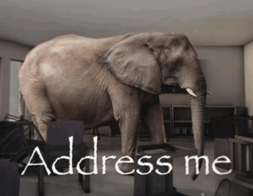

We are so back.
And by that I mean back after an accidental hiatus, though absence makes the heart grow fonder! I hope. Things are very exciting lately. Hi, dearest readers!
What the hell happened to you?
Human being stuff? It’s definitely been a helluva few weeks, and taking one of those to reset and exist was actually quite nice. Sorry if you missed me!
Besides, Monday got away from me, and knowing myself if I don’t do something while it’s right in front of me, it doesn’t get done. In any case, I have even more to talk about now with the week behind me instead of ahead of me! Aren’t you excited? I am, so let’s start with the elephant in the room.

did you listen to Beautiful Girl?
The first promise of the release schedule has been made good upon, and it’s a song dedicated to cough cough a new love whattttt who said that?!!!!! Recent happiness of mine :) go listen to it if you haven’t already!

I’m writing happy songs? Woah. didn’t know we did that around here. We do! I’m talking to myself like a crazy person.
This also makes me want to talk about the song Valerie for the first time in a while. I wrote that song in a headspace of dreams, and I feel as though in a way I wrote this one in it again. This time, though, not from the outside looking in :)
Secondly and Thirdly,
WAX is going to be released to the app store in beta very soon!
You should go check that out here and sign up! It’s gonna be big, trust.
App store approval just takes forever and a day, but get ready for it! Cool logo will be designed by my rad friend Kelly (shoutout woop!!!)

I’m looking forward to taking a trip out to my Alma Mater this weekend and seeing my dearest buds Gordon, Ava, and Whitlock this weekend at Binghamton! I love that stupid town so much and will share updates on that trip after I’m back.
I’ll be taking some more photos up there for my NEXT SINGLE, “Savannah” which I’m very excited for. It goes into the time I spent in counseling at Binghamton and what it meant to me. See: the playlist at the bottom of this week’s entry.
I’ll save those details for next week.
Last little fun thing: Crimes.
Maybe mild spoilers for the video game Night in The Woods ahead! I will try to talk about this spoiler free.
I was recommended Night in The Woods recently, and gave it a whirl. I loved my first playthrough very much, where you play as the troublesome Mae Borowski navigating what is in fact SEVERAL nights in the woods.

The music of this game is what pulled me in first, but I was kept by the incredibly dynamic characters and storyline (which gets insane by the way, holy wow). I’ll write up a full review because that sounds like a fun thing to do!
Other media I’m starting/consuming at the moment:
- Season 1 of the Pitt! (will be talking about this sometime too)
- The book series Dune!
- So much music, duh. Recently I’m listening to KNOWER like it’s nobody’s business. See: my other linked playlist
We’re gonna do a reviews of media thing at some point. That sounds fun.
Talk soon?
That’s all I’m gonna add for now, my brain is splitting in every which direction! More focused again soon, stay tuned this upcoming Monday for my weekend trip, and a full review of Night In The Woods!
Reach out anytime :)
~luca